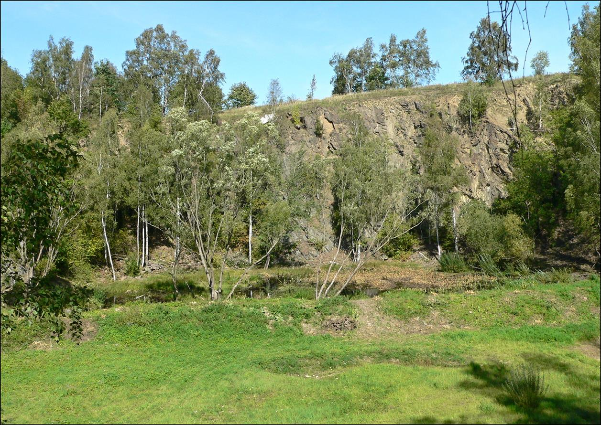
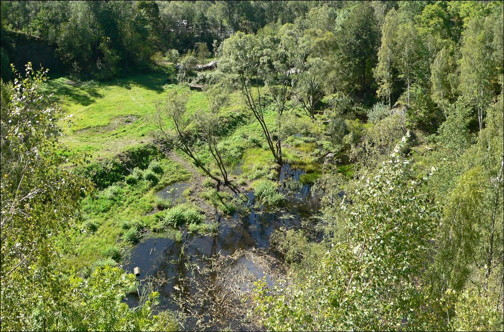

Základní informace
Staronový lom u Marburku se nachází v okolí obce Marburk na Bruntálsku. Jedná se o bývalý kamenolom, který dnes slouží především jako místo k rekreaci a odpočinku v přírodě. Lom je oblíbený mezi místními obyvateli i návštěvníky z okolí.
Díky zatopenému lomu a okolní přírodě nabízí toto místo klidnou atmosféru, krásné výhledy a možnost krátkých procházek.
Fotogalerie


Autor obrázků město Bruntál